【纯转载】视频压缩的原理-发展-应用，手把手教你学习codec
介绍
本文档旨在尽可能使用 浅显的词语，丰富的图像和实际例子 介绍数字视频概念，使这些知识能适用于各种场合。你可以随时反馈意见或建议，以改进这篇文档。
# 基本术语
一个 图像 可以视作一个 二维矩阵 。如果将 色彩 考虑进来，我们可以做出推广：将这个图像视作一个 三维矩阵 ——多出来的维度用于储存色彩信息。
如果我们选择三原色（红、绿、蓝）代表这些色彩，这就定义了三个平面：第一个是红色平面，第二个是绿色平面，最后一个是蓝色平面。
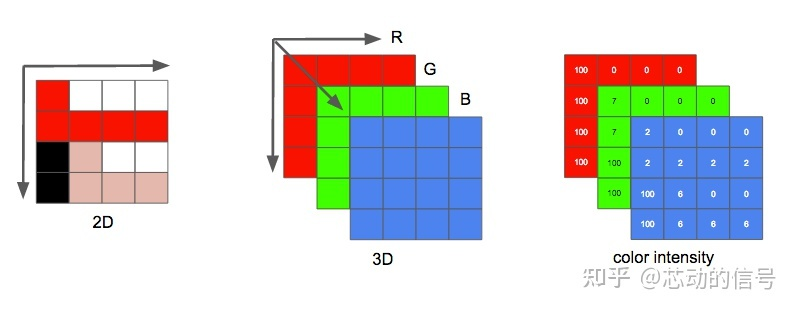
我们把这个矩阵里的每一个点称为 像素 （图像元素）。像素的色彩由三原色的 强度 （通常用数值表示）表示。例如，一个 红色像素 是指强度为 0 的绿色，强度为 0 的蓝色和强度最大的红色。 粉色像素 可以通过三种颜色的组合表示。如果规定强度的取值范围是 0 到 255， 红色 255、绿色 192、蓝色 203 则表示粉色。
编码彩色图像的其它方法 还有许多其它模型也可以用来表示色彩，进而组成图像。例如，给每种颜色都标上序号（如下图），这样每个像素仅需一个字节就可以表示出来，而不是 RGB 模型通常所需的 3 个。在这样一个模型里我们可以用一个二维矩阵来代替三维矩阵去表示我们的色彩，这将节省存储空间，但色彩的数量将会受限。
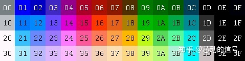
例如以下几张图片。第一张包含所有颜色平面。剩下的分别是红、绿、蓝色平面（显示为灰调）（译注：颜色强度高的地方显示为亮色，强度低为暗色）。
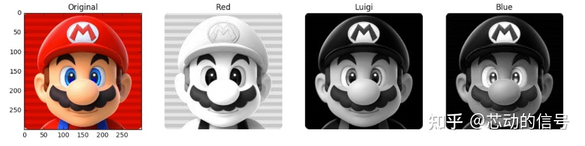
我们可以看到，对于最终的成像，红色平面对强度的贡献更多（三个平面最亮的是红色平面），蓝色平面（最后一张图片）的贡献大多只在马里奥的眼睛和他衣服的一部分。所有颜色平面对马里奥的胡子（最暗的部分）均贡献较少。
存储颜色的强度，需要占用一定大小的数据空间，这个大小被称为颜色深度。假如每个颜色（平面）的强度占用 8 bit（取值范围为 0 到 255），那么颜色深度就是 24（8*3）bit，我们还可以推导出我们可以使用 2 的 24 次方种不同的颜色。
很棒的学习材料：现实世界的照片是如何拍摄成 0 和 1 的。
图片的另一个属性是 分辨率 ，即一个平面内像素的数量。通常表示成宽*高，例如下面这张 4x4 的图片。
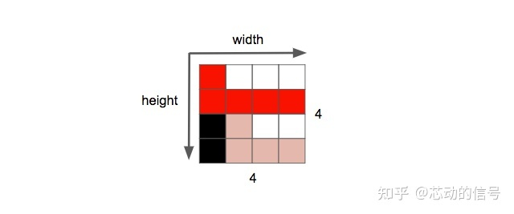
自己动手：玩转图像和颜色 你可以使用 jupyter（python, numpy, matplotlib 等等）玩转图像。 你也可以学习图像滤镜（边缘检测，锐化，模糊。。。）的原理。
图像或视频还有一个属性是宽高比，它简单地描述了图像或像素的宽度和高度之间的比例关系。
当人们说这个电影或照片是 16:9 时，通常是指显示宽高比（DAR），然而我们也可以有不同形状的单个像素，我们称为像素宽高比（PAR）。
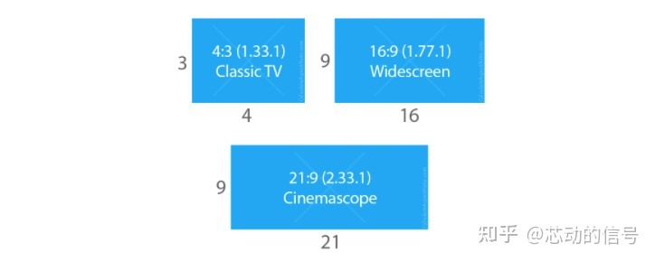
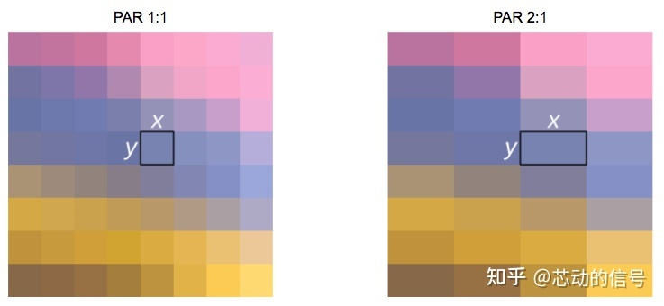
DVD 的 DAR 是 4:3 虽然 DVD 的实际分辨率是 704x480，但它依然保持 4:3 的宽高比，因为它有一个 10:11（704x10／480x11）的 PAR。
现在我们可以将 视频 定义为在 单位时间 内 连续的 n 帧 ，这可以视作一个新的维度，n 即为帧率，若单位时间为秒，则等同于 FPS (每秒帧数 Frames Per Second)。
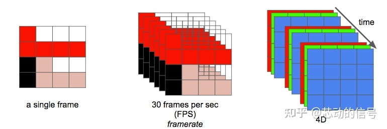
播放一段视频每秒所需的数据量就是它的 比特率 （即常说的码率）。
比特率 = 宽 * 高 * 颜色深度 * 帧每秒
例如，一段每秒 30 帧，每像素 24 bits，分辨率是 480x240 的视频，如果我们不做任何压缩，它将需要 82,944,000 比特每秒 或 82.944 Mbps (30x480x240x24)。
当 比特率 几乎恒定时称为恒定比特率（ CBR ）；但它也可以变化，称为可变比特率（ VBR ）。
这个图形显示了一个受限的 VBR，当帧为黑色时不会花费太多的数据量。
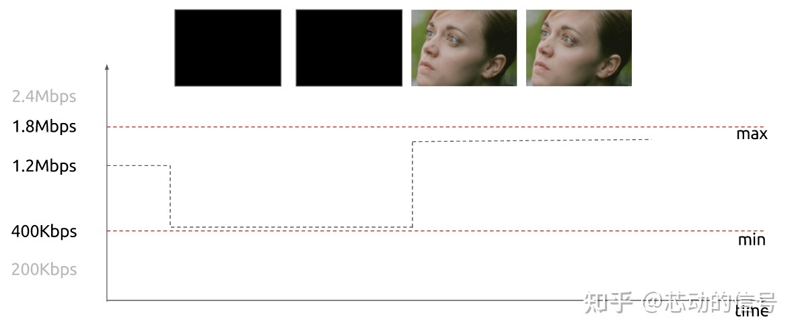
在早期，工程师们想出了一项技术能将视频的感官帧率加倍而 没有消耗额外带宽 。这项技术被称为 隔行扫描 ；总的来说，它在一个时间点发送一个画面——画面用于填充屏幕的一半，而下一个时间点发送的画面用于填充屏幕的另一半。
如今的屏幕渲染大多使用 逐行扫描技术 。这是一种显示、存储、传输运动图像的方法，每帧中的所有行都会被依次绘制。
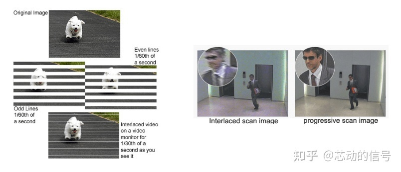
现在我们知道了数字化 图像 的原理；它的 颜色 的编排方式；给定 帧率 和 分辨率 时，展示一个视频需要花费多少 比特率 ；它是恒定的（CBR）还是可变的（VBR）；还有很多其它内容，如隔行扫描和 PAR。
自己动手：检查视频属性 你可以使用 ffmpeg 或 mediainfo 检查大多数属性的解释。
# 消除冗余
我们认识到，不对视频进行压缩是不行的； 一个单独的一小时长的视频 ，分辨率为 720p 和 30fps 时将 需要 278GB* 。仅仅使用无损数据压缩算法——如 DEFLATE（被PKZIP, Gzip, 和 PNG 使用）——也无法充分减少视频所需的带宽，我们需要找到其它压缩视频的方法。
*我们使用乘积得出这个数字 1280 x 720 x 24 x 30 x 3600 （宽，高，每像素比特数，fps 和秒数）
为此，我们可以 利用视觉特性 ：和区分颜色相比，我们区分亮度要更加敏锐。 时间上的重复 ：一段视频包含很多只有一点小小改变的图像。 图像内的重复 ：每一帧也包含很多颜色相同或相似的区域。
# 颜色，亮度和我们的眼睛
我们的眼睛对亮度比对颜色更敏感，你可以看看下面的图片自己测试。
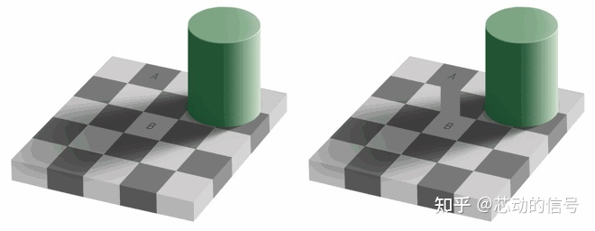
如果你看不出左图的 方块 A 和方块 B 的颜色是 相同的 ，那么好，是我们的大脑玩了一个小把戏，这让我们更多的去注意光与暗，而不是颜色。右边这里有一个使用同样颜色的连接器，那么我们（的大脑）就能轻易分辨出事实，它们是同样的颜色。
简单解释我们的眼睛工作的原理 眼睛是一个复杂的器官，有许多部分组成，但我们最感兴趣的是视锥细胞和视杆细胞。眼睛有大约1.2亿个视杆细胞和6百万个视锥细胞。 简单来说 ，让我们把颜色和亮度放在眼睛的功能部位上。视杆细胞 主要负责亮度 ，而视锥细胞 负责颜色 ，有三种类型的视锥，每个都有不同的颜料，叫做：S-视锥（蓝色），M-视锥（绿色）和L-视锥（红色）。 既然我们的视杆细胞（亮度）比视锥细胞多很多，一个合理的推断是相比颜色，我们有更好的能力去区分黑暗和光亮。
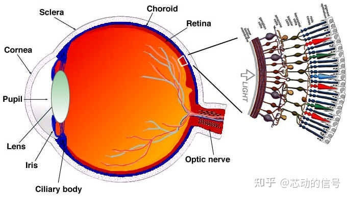
一旦我们知道我们对 亮度 （图像中的亮度）更敏感，我们就可以利用它。
# 颜色模型
我们最开始学习的彩色图像的原理使用的是 RGB 模型 ，但也有其他模型。有一种模型将亮度（光亮）和色度（颜色）分离开，它被称为 YCbCr *。
- 有很多种模型做同样的分离。
这个颜色模型使用 Y 来表示亮度，还有两种颜色通道：Cb（蓝色色度） 和 Cr（红色色度）。YCbCr 可以由 RGB 转换得来，也可以转换回 RGB。使用这个模型我们可以创建拥有完整色彩的图像，如下图。
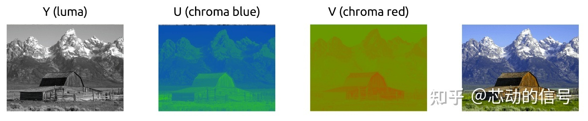
# YCbCr 和 RGB 之间的转换
有人可能会问，在 不使用绿色(色度) 的情况下，我们如何表现出所有的色彩？
为了回答这个问题，我们将介绍从 RGB 到 YCbCr 的转换。我们将使用 ITU-R 小组*建议的标准 BT.601 中的系数。
第一步是计算亮度，我们将使用 ITU 建议的常量，并替换 RGB 值。
Y = 0.299R + 0.587G + 0.114B
一旦我们有了亮度后，我们就可以拆分颜色（蓝色色度和红色色度）：
Cb = 0.564(B - Y)
Cr = 0.713(R - Y)
2
并且我们也可以使用 YCbCr 转换回来，甚至得到绿色。
R = Y + 1.402Cr
B = Y + 1.772Cb
G = Y - 0.344Cb - 0.714Cr
2
3
*组织和标准在数字视频领域中很常见，它们通常定义什么是标准，例如，什么是 4K？我们应该使用什么帧率？分辨率？颜色模型？
通常， 显示屏 （监视器，电视机，屏幕等等） 仅使用 RGB 模型 ，并以不同的方式来组织，看看下面这些放大效果：
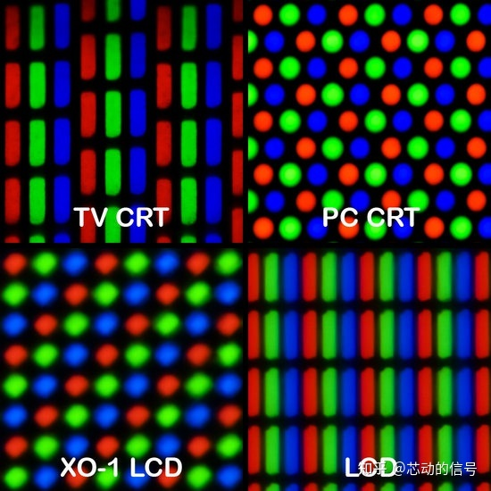
# 色度子采样
一旦我们能从图像中分离出亮度和色度，我们就可以利用人类视觉系统对亮度比色度更敏感的特点，选择性地剔除信息。 色度子采样 是一种编码图像时，使 色度分辨率低于亮度 的技术。
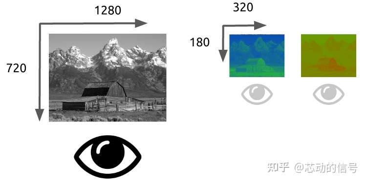
我们应该减少多少色度分辨率呢？已经有一些模式定义了如何处理分辨率和合并（ 最终的颜色 = Y + Cb + Cr ）。
这些模式称为子采样系统，并被表示为 3 部分的比率 - a:x:y ，其定义了色度平面的分辨率，与亮度平面上的、分辨率为 a x 2 的小块之间的关系。
a是水平采样参考 (通常是 4)，x是第一行的色度样本数（相对于 a 的水平分辨率），y是第二行的色度样本数。
存在的一个例外是 4:1:0，其在每个亮度平面分辨率为 4 x 4 的块内提供一个色度样本。
现代编解码器中使用的常用方案是： 4:4:4 (没有子采样), 4:2:2, 4:1:1, 4:2:0, 4:1:0 and 3:1:1。
YCbCr 4:2:0 合并 这是使用 YCbCr 4:2:0 合并的一个图像的一块，注意我们每像素只花费 12bit。
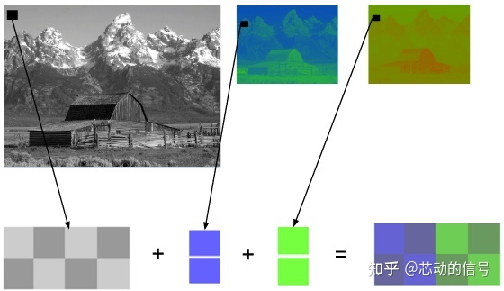
下图是同一张图片使用几种主要的色度子采样技术进行编码，第一行图像是最终的 YCbCr，而最后一行图像展示了色度的分辨率。这么小的损失确实是一个伟大的胜利。
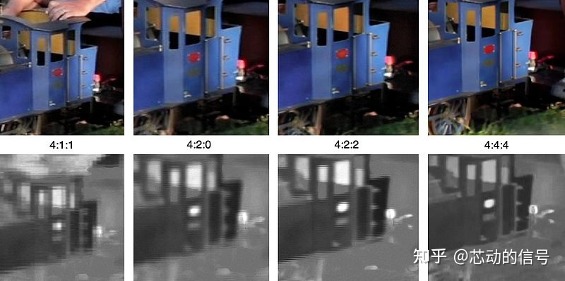
前面我们计算过我们需要 278GB 去存储一个一小时长，分辨率在720p和30fps的视频文件。如果我们使用 YCbCr 4:2:0 我们能减少 一半的大小（139GB） *，但仍然不够理想。
- 我们通过将宽、高、颜色深度和 fps 相乘得出这个值。前面我们需要 24 bit，现在我们只需要 12 bit。 自己动手：检查 YCbCr 直方图 你可以使用 ffmpeg 检查 YCbCr 直方图。这个场景有更多的蓝色贡献，由直方图显示。
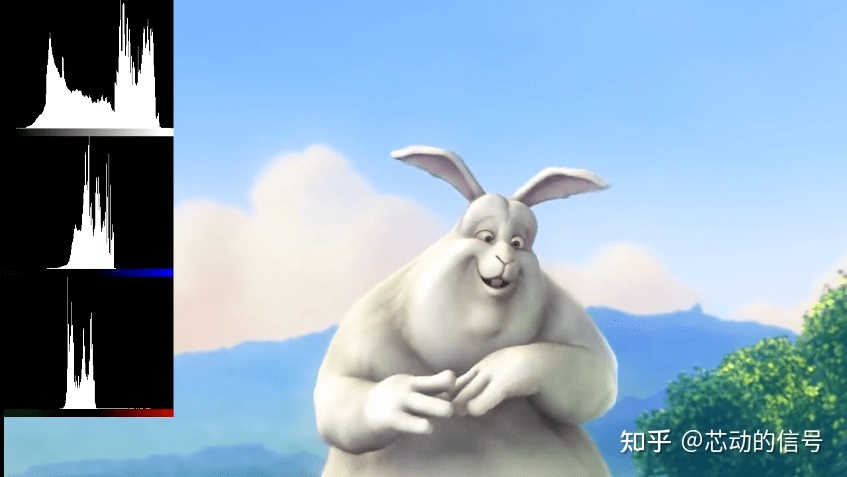
# 颜色, 亮度, 视频亮度, 伽马 视频回顾
观看这段精彩的视频，它解释什么是亮度并了解视频亮度、伽马和颜色。
自己动手: 检查 YCbCr 强度 你可以使用FFmpeg's oscilloscope滤镜可视化给定视频行的Y强度. ffplay -f lavfi -i 'testsrc2=size=1280x720:rate=30000/1001,format=yuv420p' -vf oscilloscope=x=0.5:y=200/720:s=1:c=1
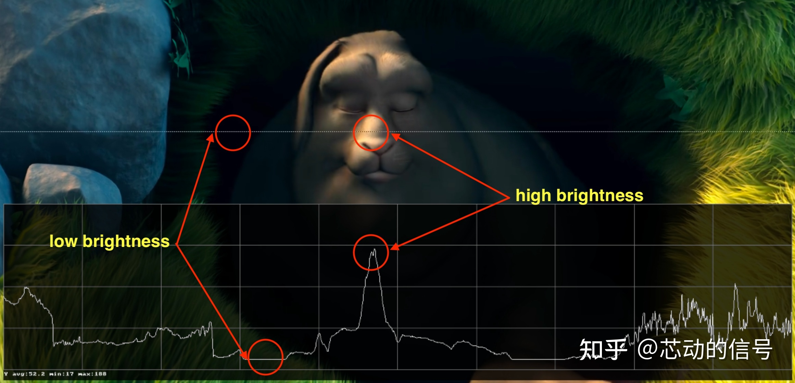
# 帧类型
现在我们进一步消除 时间冗余 ，但在这之前让我们来确定一些基本术语。假设我们一段 30fps 的影片，这是最开始的 4 帧。
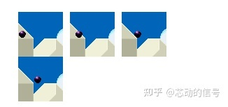
我们可以在帧内看到 很多重复内容 ，如 蓝色背景 ，从 0 帧到第 3 帧它都没有变化。为了解决这个问题，我们可以将它们 抽象地分类 为三种类型的帧。
# I 帧（帧内，关键帧）
I 帧（可参考，关键帧，帧内编码）是一个 自足的帧 。它不依靠任何东西来渲染，I 帧与静态图片相似。第一帧通常是 I 帧，但我们将看到 I 帧被定期插入其它类型的帧之间。
# P 帧（预测）
P 帧利用了一个事实：当前的画面几乎总能 使用之前的一帧进行渲染 。例如，在第二帧，唯一的改变是球向前移动了。仅仅使用（第二帧）对前一帧的引用和差值，我们就能重建前一帧。
自己动手：具有单个 I 帧的视频 既然 P 帧使用较少的数据，为什么我们不能用单个 I 帧和其余的 P 帧来编码整个视频？ 编码完这个视频之后，开始观看它，并 快进到视频的末尾部分 ，你会注意到 它需要花一些时间 才真正跳转到这部分。这是因为 P 帧需要一个引用帧 （比如 I 帧）才能渲染。 你可以做的另一个快速试验，是使用单个 I 帧编码视频，然后再次编码且每 2 秒插入一个 I 帧，并 比较成品的大小 。
# B 帧（双向预测）
如何引用前面和后面的帧去做更好的压缩？！简单地说 B 帧就是这么做的。
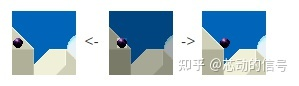
自己动手：使用 B 帧比较视频 你可以生成两个版本，一个使用 B 帧，另一个全部不使用 B 帧，然后查看文件的大小以及画质。
# 小结
这些帧类型用于提供更好的压缩率，我们将在下一章看到这是如何发生的。现在，我们可以想到 I 帧是昂贵的，P 帧是便宜的，最便宜的是 B 帧。
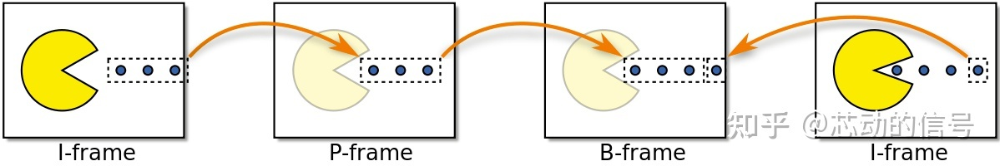
# 时间冗余（帧间预测）
让我们探究去除 时间上的重复 ，去除这一类冗余的技术就是 帧间预测 。
我们将尝试 花费较少的数据量 去编码在时间上连续的 0 号帧和 1 号帧。
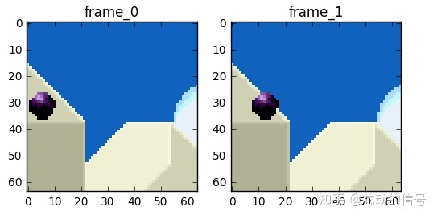
我们可以做个减法，我们简单地 用 0 号帧减去 1 号帧 ，得到残差，这样我们就只需要 对残差进行编码 。
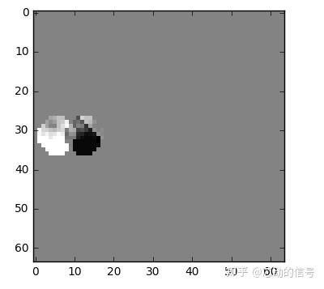
但我们有一个 更好的方法 来节省数据量。首先，我们将 0 号帧 视为一个个分块的集合，然后我们将尝试将 帧 1 和 帧 0 上的块相匹配。我们可以将这看作是 运动预测 。
维基百科—块运动补偿 “运动补偿是一种描述相邻帧（相邻在这里表示在编码关系上相邻，在播放顺序上两帧未必相邻）差别的方法，具体来说是描述前面一帧（相邻在这里表示在编码关系上的前面，在播放顺序上未必在当前帧前面）的每个小块怎样移动到当前帧中的某个位置去。”
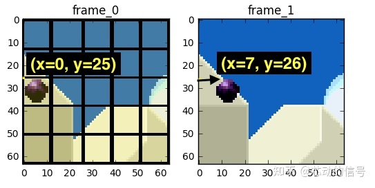
我们预计那个球会从 x=0, y=25 移动到 x=6, y=26 ， x 和 y 的值就是 运动向量 。 进一步 节省数据量的方法是，只编码这两者运动向量的差。所以，最终运动向量就是 x=6 (6-0), y=1 (26-25) 。
实际情况下，这个球会被切成 n 个分区，但处理过程是相同的。
帧上的物体 以三维方式移动 ，当球移动到背景时会变小。当我们尝试寻找匹配的块， 找不到完美匹配的块 是正常的。这是一张运动预测与实际值相叠加的图片。
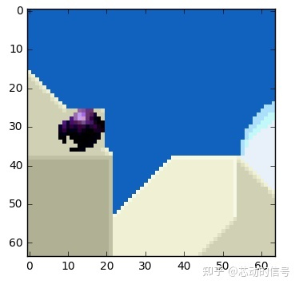
但我们能看到当我们使用 运动预测 时， 编码的数据量少于 使用简单的残差帧技术。
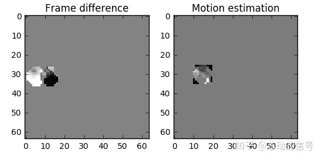
自己动手：查看运动向量 我们可以使用 ffmpeg 生成包含帧间预测（运动向量）的视频。
或者我们也可使用 Intel® Video Pro Analyzer（需要付费，但也有只能查看前 10 帧的免费试用版）。
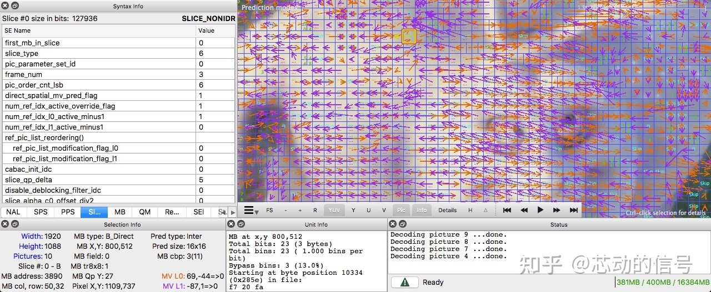
# 空间冗余（帧内预测）
如果我们分析一个视频里的 每一帧 ，我们会看到有 许多区域是相互关联的 。
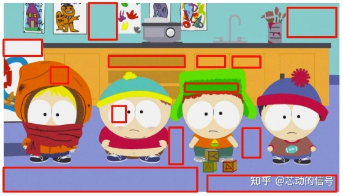
让我们举一个例子。这个场景大部分由蓝色和白色组成。
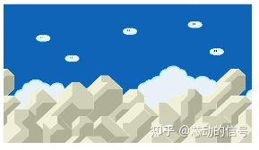
这是一个 I 帧 ，我们 不能使用前面的帧来预测 ，但我们仍然可以压缩它。我们将编码我们选择的那块红色区域。如果我们 看看它的周围 ，我们可以 估计它周围颜色的变化 。
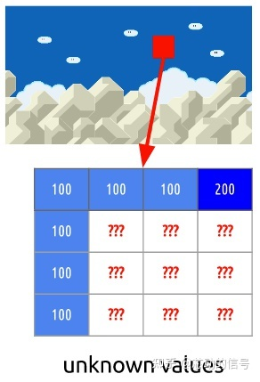
我们预测:帧中的颜色在垂直方向上保持一致，这意味着 未知像素的颜色与临近的像素相同 。
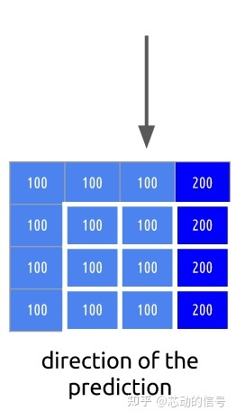
我们的 预测会出错 ，所以我们需要先利用这项技术（ 帧内预测 ），然后 减去实际值 ，算出残差，得出的矩阵比原始数据更容易压缩。
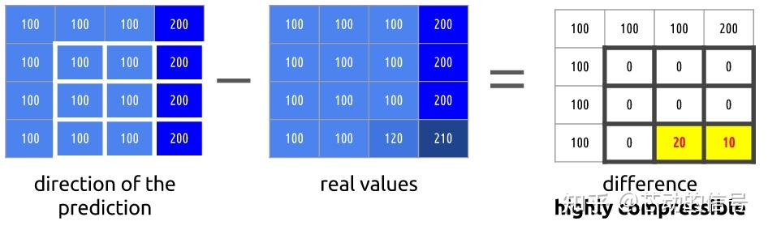
自己动手：查看帧内预测 你可以使用 ffmpeg 生成包含宏块及预测的视频。请查看 ffmpeg 文档以了解每个块颜色的含义。
或者我们也可使用 Intel® Video Pro Analyzer（需要付费，但也有只能查看前 10 帧的免费试用版）。
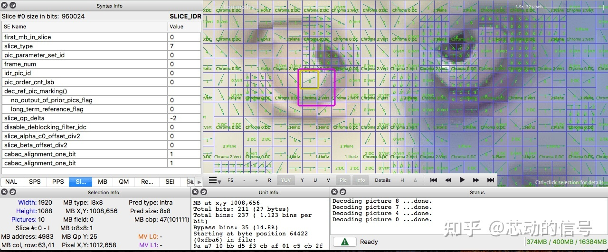
# 视频编解码器是如何工作的？
# 是什么？为什么？怎么做？
是什么？ 就是用于压缩或解压数字视频的软件或硬件。 为什么？ 人们需要在有限带宽或存储空间下提高视频的质量。还记得当我们计算每秒 30 帧，每像素 24 bit，分辨率是 480x240 的视频需要多少带宽吗？没有压缩时是 82.944 Mbps 。电视或互联网提供 HD/FullHD/4K 只能靠视频编解码器。 怎么做？ 我们将简单介绍一下主要的技术。
视频编解码 vs 容器 初学者一个常见的错误是混淆数字视频编解码器和数字视频容器。我们可以将 容器 视为包含视频（也很可能包含音频）元数据的包装格式， 压缩过的视频 可以看成是它承载的内容。 通常，视频文件的格式定义其视频容器。例如，文件
video.mp4可能是 MPEG-4 Part 14 容器，一个叫video.mkv的文件可能是 matroska。我们可以使用 ffmpeg 或 mediainfo 来完全确定编解码器和容器格式。
# 历史
在我们跳进通用编解码器内部工作之前，让我们回头了解一些旧的视频编解码器。
视频编解码器 H.261 诞生在 1990（技术上是 1988），被设计为以 64 kbit/s 的数据速率 工作。它已经使用如色度子采样、宏块，等等理念。在 1995 年， H.263 视频编解码器标准被发布，并继续延续到 2001 年。
在 2003 年 H.264/AVC 的第一版被完成。在同一年，一家叫做 TrueMotion 的公司发布了他们的 免版税 有损视频压缩的视频编解码器，称为 VP3 。在 2008 年， Google 收购了 这家公司，在同一年发布 VP8 。在 2012 年 12 月，Google 发布了 VP9 ， 市面上大约有 3/4 的浏览器 （包括手机）支持。
AV1 是由 Google, Mozilla, Microsoft, Amazon, Netflix, AMD, ARM, NVidia, Intel, Cisco 等公司组成的开放媒体联盟（AOMedia）设计的一种新的免版税和开源的视频编解码器。 第一版 0.1.0 参考编解码器 发布于 2016 年 4 月 7 号 。
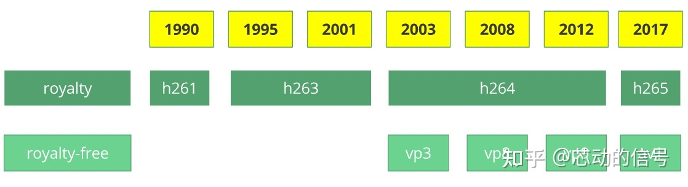
AV1 的诞生 2015 年早期，Google 正在开发VP10，Xiph (Mozilla) 正在开发Daala，Cisco 开源了其称为 Thor 的免版税视频编解码器。 接着 MPEG LA 宣布了 HEVC (H.265) 每年版税的的上限，比 H.264 高 8 倍，但很快他们又再次改变了条款：
- 不设年度收费上限
- 收取内容费 （收入的 0.5%）
- 每单位费用高于 h264 的 10 倍
开放媒体联盟由硬件厂商（Intel, AMD, ARM , Nvidia, Cisco），内容分发商（Google, Netflix, Amazon），浏览器维护者（Google, Mozilla），等公司创建。
这些公司有一个共同目标，一个免版税的视频编解码器，所以 AV1 诞生时使用了一个更简单的专利许可证。 Timothy B. Terriberry 做了一个精彩的介绍，关于 AV1 的概念，许可证模式和它当前的状态，就是本节的来源。 前往 https://arewecompressedyet.com/analyzer/， 你会惊讶于 使用你的浏览器就可以分析 AV1 编解码器 。
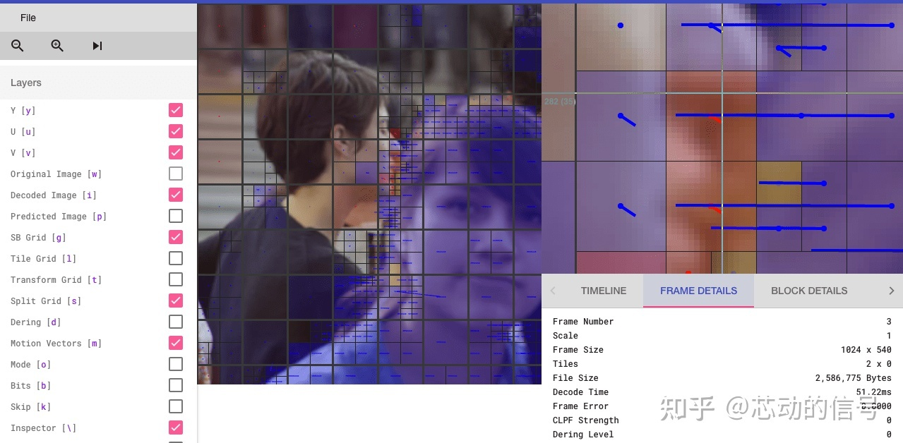
附：如果你想了解更多编解码器的历史，你需要了解视频压缩专利背后的基本知识。
# 通用编解码器
我们接下来要介绍 通用视频编解码器背后的主要机制 ，大多数概念都很实用，并被现代编解码器如 VP9, AV1 和 HEVC 使用。需要注意：我们将简化许多内容。有时我们会使用真实的例子（主要是 H.264）来演示技术。
# 第一步 - 图片分区
第一步是 将帧 分成几个 分区 ， 子分区 甚至更多。
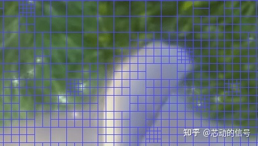
但是为什么呢 有许多原因，比如，当我们分割图片时，我们可以更精确的处理预测，在微小移动的部分使用较小的分区，而在静态背景上使用较大的分区。
通常，编解码器 将这些分区组织 成切片（或瓦片），宏（或编码树单元）和许多子分区。这些分区的最大大小有所不同，HEVC 设置成 64x64，而 AVC 使用 16x16，但子分区可以达到 4x4 的大小。
还记得我们学过的 帧的分类 吗？你也可以 把这些概念应用到块 ，因此我们可以有 I 切片，B 切片，I 宏块等等。
自己动手：查看分区 我们也可以使用 Intel® Video Pro Analyzer（需要付费，但也有只能查看前 10 帧的免费试用版）。这是 VP9 分区的分析。
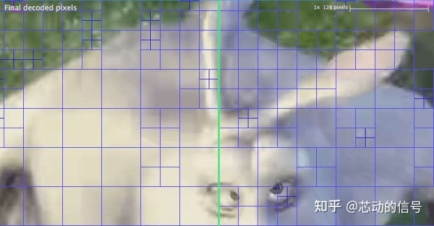
# 第二步 - 预测
一旦我们有了分区，我们就可以在它们之上做出预测。对于帧间预测，我们需要 发送运动向量和残差 ；至于帧内预测，我们需要 发送预测方向和残差 。
# 第三步 - 转换
在我们得到残差块（ 预测分区-真实分区 ）之后，我们可以用一种方式 变换 它，这样我们就知道 哪些像素我们应该丢弃 ，还依然能保持 整体质量 。这个确切的行为有几种变换方式。
尽管有其它的变换方式，但我们重点关注离散余弦变换（DCT）。DCT 的主要功能有：
- 将 像素 块 转换 为相同大小的 频率系数块 。
- 压缩 能量，更容易消除空间冗余。
- 可逆的 ，也意味着你可以还原回像素。
2017 年 2 月 2 号，F. M. Bayer 和 R. J. Cintra 发表了他们的论文：图像压缩的 DCT 类变换只需要 14 个加法。
如果你不理解每个要点的好处，不用担心，我们会尝试进行一些实验，以便从中看到真正的价值。
我们来看下面的 像素块 （8x8）：
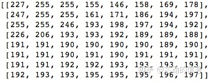
下面是其渲染的块图像（8x8）：
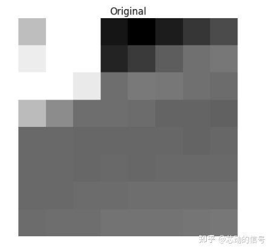
当我们对这个像素块 应用 DCT 时， 得到如下 系数块 （8x8）：
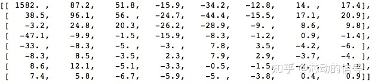
接着如果我们渲染这个系数块，就会得到这张图片：
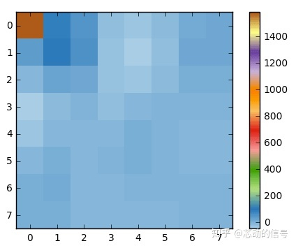
如你所见它看起来完全不像原图像，我们可能会注意到 第一个系数 与其它系数非常不同。第一个系数被称为直流分量，代表了输入数组中的 所有样本 ，有点 类似于平均值 。
这个系数块有一个有趣的属性：高频部分和低频部分是分离的。
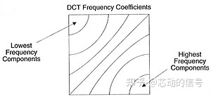
在一张图像中， 大多数能量 会集中在低频部分，所以如果我们将图像转换成频率系数，并 丢掉高频系数 ，我们就能 减少描述图像所需的数据量 ，而不会牺牲太多的图像质量。
频率是指信号变化的速度。
让我们通过实验学习这点，我们将使用 DCT 把原始图像转换为频率（系数块），然后丢掉最不重要的系数。
首先，我们将它转换为其 频域 。
然后我们丢弃部分（67%）系数，主要是它的右下角部分。
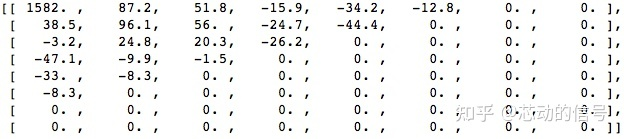
然后我们从丢弃的系数块重构图像（记住，这需要可逆），并与原始图像相比较。
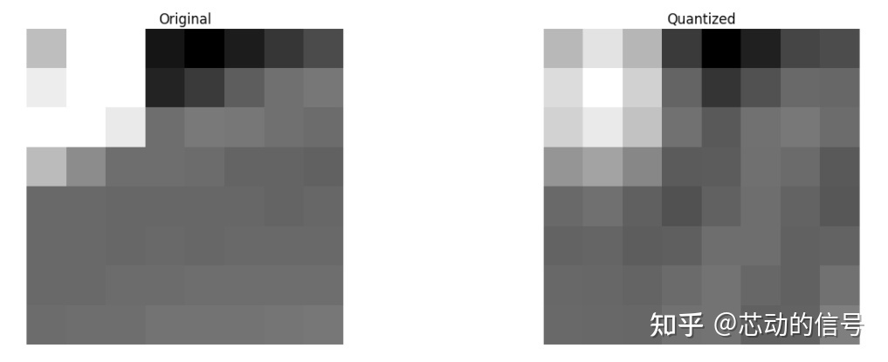
如我们所见它酷似原始图像，但它引入了许多与原来的不同，我们 丢弃了67.1875% ，但我们仍然得到至少类似于原来的东西。我们可以更加智能的丢弃系数去得到更好的图像质量，但这是下一个主题。
使用全部像素形成每个系数 需要注意的是，每个系数并不直接映射到单个像素，而是所有像素的加权和。这个神奇的图形展示了如何使用每个指数唯一的权重来计算第一个和第二个系数。
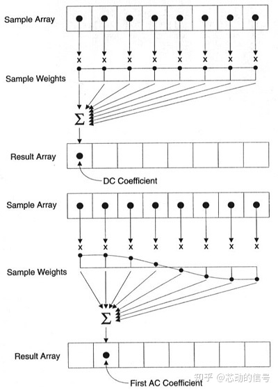
来源：https://web.archive.org/web/20150129171151/https://www.iem.thm.de/telekom-labor/zinke/mk/mpeg2beg/whatisit.htm 你也可以尝试通过查看在 DCT 基础上形成的简单图片来可视化 DCT。例如，这是使用每个系数权重形成的字符 A。 维基百科给出了一个DCT的演示动画： https://upload.wikimedia.org/wikipedia/commons/5/5e/Idct-animation.gif 自己动手：丢弃不同的系数 你可以玩转 DCT 变换
# 第四步 - 量化
当我们丢弃一些系数时，在最后一步（变换），我们做了一些形式的量化。这一步，我们选择性地剔除信息（ 有损部分 ）或者简单来说，我们将 量化系数以实现压缩 。
我们如何量化一个系数块？一个简单的方法是均匀量化，我们取一个块并 将其除以单个的值 （10），并舍入值。
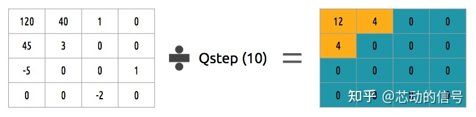
我们如何 逆转 （重新量化）这个系数块？我们可以通过 乘以我们先前除以的相同的值 （10）来做到。
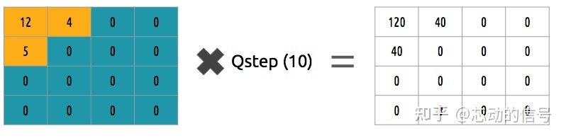
这 不是最好的方法 ，因为它没有考虑到每个系数的重要性，我们可以使用一个 量化矩阵 来代替单个值，这个矩阵可以利用 DCT 的属性，多量化右下部，而少（量化）左上部，JPEG 使用了类似的方法，你可以通过查看源码看看这个矩阵。
自己动手：量化 你可以玩转量化
# 第五步 - 熵编码
在我们量化数据（图像块／切片／帧）之后，我们仍然可以以无损的方式来压缩它。有许多方法（算法）可用来压缩数据。我们将简单体验其中几个，你可以阅读这本很棒的书去深入理解：Understanding Compression: Data Compression for Modern Developers。
# VLC 编码：
让我们假设我们有一个符号流： a , e , r 和 t ，它们的概率（从0到1）由下表所示。
| a | e | r | t | |
|---|---|---|---|---|
| 概率 | 0.3 | 0.3 | 0.2 | 0.2 |
| a | e | r | t | |
|---|---|---|---|---|
| 概率 | 0.3 | 0.3 | 0.2 | 0.2 |
| 二进制码 | 0 | 10 | 110 | 1110 |
第一步是编码字符 e 为 10 ，第二个字符是 a ，追加（不是数学加法）后是 [10][0] ，最后是第三个字符 t ，最终组成已压缩的比特流 [10][0][1110] 或 1001110 ，这只需 7 bit （比原来的空间少 3.4 倍）。
请注意每个代码必须是唯一的前缀码，Huffman 能帮你找到这些数字。虽然它有一些问题，但是视频编解码器仍然提供该方法，它也是很多应用程序的压缩算法。
编码器和解码器都 必须知道 这个（包含编码的）字符表，因此，你也需要传送这个表。
# 算术编码
让我们假设我们有一个符号流： a , e , r , s 和 t ，它们的概率由下表所示。
| a | e | r | s | t | |
|---|---|---|---|---|---|
| 概率 | 0.3 | 0.3 | 0.15 | 0.05 | 0.2 |
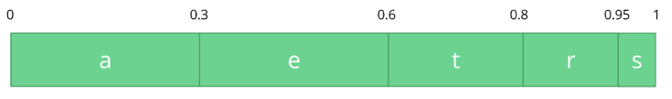
让我们编码 eat 流，我们选择第一个字符 e 位于 0.3 到 0.6 （但不包括 0.6）的子区间，我们选择这个子区间，按照之前同等的比例再次分割。
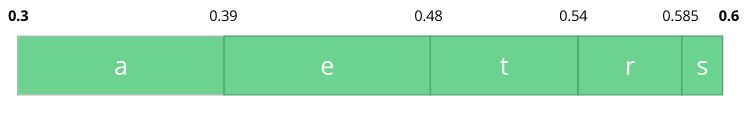
让我们继续编码我们的流 eat ，现在使第二个 a 字符位于 0.3 到 0.39 的区间里，接着再次用同样的方法编码最后的字符 t ，得到最后的子区间 0.354 到 0.372 。
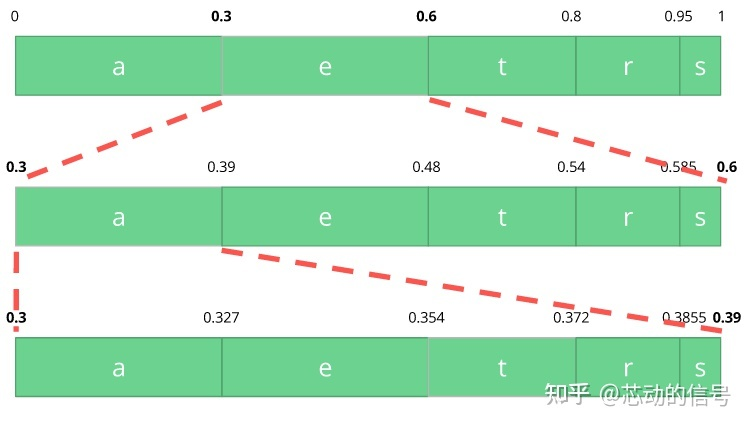
我们只需从最后的子区间 0.354 到 0.372 里选择一个数，让我们选择 0.36，不过我们可以选择这个子区间里的任何数。仅靠这个数，我们将可以恢复原始流 eat 。就像我们在区间的区间里画了一根线来编码我们的流。
反向过程 （又名解码）一样简单，用数字 0.36 和我们原始区间，我们可以进行同样的操作，不过现在是使用这个数字来还原被编码的流。
在第一个区间，我们发现数字落入了一个子区间，因此，这个子区间是我们的第一个字符，现在我们再次切分这个子区间，像之前一样做同样的过程。我们会注意到 0.36 落入了 a 的区间，然后我们重复这一过程直到得到最后一个字符 t （形成我们原始编码过的流 eat）。
编码器和解码器都 必须知道 字符概率表，因此，你也需要传送这个表。
非常巧妙，不是吗？人们能想出这样的解决方案实在是太聪明了，一些视频编解码器使用这项技术（或至少提供这一选择）。
关于无损压缩量化比特流的办法，这篇文章无疑缺少了很多细节、原因、权衡等等。作为一个开发者你应该学习更多。刚入门视频编码的人可以尝试使用不同的熵编码算法，如ANS。
自己动手：CABAC vs CAVLC 你可以生成两个流，一个使用 CABAC，另一个使用 CAVLC，并比较生成每一个的时间以及最终的大小。
# 第六步 - 比特流格式
完成所有这些步之后，我们需要将 压缩过的帧和内容打包进去 。需要明确告知解码器 编码定义 ，如颜色深度，颜色空间，分辨率，预测信息（运动向量，帧内预测方向），档次*，级别*，帧率，帧类型，帧号等等更多信息。
- 译注：原文为 profile 和 level，没有通用的译名
我们将简单地学习 H.264 比特流。第一步是生成一个小的 H.264* 比特流，可以使用本 repo 和 ffmpeg 来做。
./s/ffmpeg -i /files/i/minimal.png -pix_fmt yuv420p /files/v/minimal_yuv420.h264
- ffmpeg 默认将所有参数添加为 SEI NAL ，很快我们会定义什么是 NAL。
这个命令会使用下面的图片作为帧，生成一个具有 单个帧 ，64x64 和颜色空间为 yuv420 的原始 h264 比特流。
# H.264 比特流
AVC (H.264) 标准规定信息将在宏帧（网络概念上的）内传输，称为 NAL（网络抽象层）。NAL 的主要目标是提供“网络友好”的视频呈现方式，该标准必须适用于电视（基于流），互联网（基于数据包）等。
同步标记用来定义 NAL 单元的边界。每个同步标记的值固定为 0x00 0x00 0x01 ，最开头的标记例外，它的值是 0x00 0x00 0x00 0x01 。如果我们在生成的 h264 比特流上运行 hexdump ，我们可以在文件的开头识别至少三个 NAL。
我们之前说过，解码器需要知道不仅仅是图片数据，还有视频的详细信息，如：帧、颜色、使用的参数等。每个 NAL 的 第一位 定义了其分类和 类型 。
| NAL type id | 描述 |
|---|---|
| 0 | Undefined |
| 1 | Coded slice of a non-IDR picture |
| 2 | Coded slice data partition A |
| 3 | Coded slice data partition B |
| 4 | Coded slice data partition C |
| 5 | IDR Coded slice of an IDR picture |
| 6 | SEI Supplemental enhancement information |
| 7 | SPS Sequence parameter set |
| 8 | PPS Picture parameter set |
| 9 | Access unit delimiter |
| 10 | End of sequence |
| 11 | End of stream |
| ... | ... |
如果我们跳过第一个同步标记，就可以通过解码 第一个字节 来了解第一个 NAL 的类型 。
例如同步标记之后的第一个字节是 01100111 ，第一位（ 0 ）是 forbidden_zero_bit 字段，接下来的两位（ 11 ）告诉我们是 nal_ref_idc 字段，其表示该 NAL 是否是参考字段，其余 5 位（ 00111 ）告诉我们是 nal_unit_type 字段，在这个例子里是 NAL 单元 SPS (7)。
SPS NAL 的第 2 位 ( binary=01100100, hex=0x64, dec=100 ) 是 profile_idc 字段，显示编码器使用的配置，在这个例子里，我们使用高阶档次，一种没有 B（双向预测） 切片支持的高阶档次。
当我们阅读 SPS NAL 的 H.264 比特流规范时，会为 参数名称 ， 分类 和 描述 找到许多值，例如，看看字段 pic_width_in_mbs_minus_1 和 pic_height_in_map_units_minus_1 。
| 参数名称 | 分类 | 描述 |
|---|---|---|
| pic_width_in_mbs_minus_1 | 0 | ue(v) |
| pic_height_in_map_units_minus_1 | 0 | ue(v) |
ue(v) : 无符号整形 Exp-Golomb-coded
如果我们对这些字段的值进行一些计算，将最终得出 分辨率 。我们可以使用值为 119（ (119 + 1) * macroblock_size = 120 * 16 = 1920） 的 pic_width_in_mbs_minus_1 表示 1920 x 1080 ，再次为了减少空间，我们使用 119 来代替编码 1920 。
如果我们再次使用二进制视图检查我们创建的视频 (ex: xxd -b -c 11 v/minimal_yuv420.h264 )，可以跳到帧自身上一个 NAL。
我们可以看到最开始的 6 个字节： 01100101 10001000 10000100 00000000 00100001 11111111 。我们已经知道第一个字节告诉我们 NAL 的类型，在这个例子里， ( 00101 ) 是 IDR 切片 (5) ，可以进一步检查它：
对照规范，我们能解码切片的类型（ slice_type ），帧号（ frame_num ）等重要字段。
为了获得一些字段（ ue(v), me(v), se(v) 或 te(v) ）的值，我们需要称为 Exponential-Golomb 的特定解码器来解码它。当存在很多默认值时，这个方法编码变量值特别高效。
这个视频里 slice_type 和 frame_num 的值是 7（I 切片）和 0（第一帧）。
我们可以将 比特流视为一个协议 ，如果你想学习更多关于比特流的内容，请参考 ITU H.264 规范。这个宏观图展示了图片数据（压缩过的 YUV）所在的位置。
我们可以探究其它比特流，如 VP9 比特流，H.265（HEVC）或是我们的新朋友 AV1 比特流，他们很相似吗？不，但只要学习了其中之一，学习其他的就简单多了。
自己动手：检查 H.264 比特流 我们可以生成一个单帧视频，使用 mediainfo 检查它的 H.264 比特流。事实上，你甚至可以查看解析 h264(AVC) 视频流的源代码。
我们也可使用 Intel® Video Pro Analyzer，需要付费，但也有只能查看前 10 帧的免费试用版，这已经够达成学习目的了。
# 回顾
我们可以看到我们学了许多 使用相同模型的现代编解码器 。事实上，让我们看看 Thor 视频编解码器框图，它包含所有我们学过的步骤。你现在应该能更好地理解数字视频领域内的创新和论文。
之前我们计算过我们需要 139GB 来保存一个一小时，720p 分辨率和30fps的视频文件，如果我们使用在这里学过的技术，如 帧间和帧内预测，转换，量化，熵编码和其它 我们能实现——假设我们 每像素花费 0.031 bit ——同样观感质量的视频， 对比 139GB 的存储，只需 367.82MB 。
我们根据这里提供的示例视频选择 每像素使用 0.031 bit 。
# H.265 如何实现比 H.264 更好的压缩率
我们已经更多地了解了编解码器的工作原理，那么就容易理解新的编解码器如何使用更少的数据量传输更高分辨率的视频。
我们将比较 AVC 和 HEVC，要记住的是：我们几乎总是要在压缩率和更多的 CPU 周期（复杂度）之间作权衡。
HEVC 比 AVC 有更大和更多的 分区 （和 子分区 ）选项，更多 帧内预测方向 ， 改进的熵编码 等，所有这些改进使得 H.265 比 H.264 的压缩率提升 50%。
# 在线流媒体
# 通用架构
# 渐进式下载和自适应流
# 内容保护
我们可以用一个简单的令牌认证系统来保护视频。用户需要拥有一个有效的令牌才可以播放视频，CDN 会拒绝没有令牌的用户的请求。它与大多数网站的身份认证系统非常相似。
仅仅使用令牌认证系统，用户仍然可以下载并重新分发视频。DRM 系统可以用来避免这种情况。
实际情况下，人们通常同时使用这两种技术提供授权和认证。
# DRM
# 主要系统
- FPS - FairPlay Streaming
- PR - PlayReady
- WV - Widevine
# 是什么
DRM 指的是数字版权管理，是一种 为数字媒体提供版权保护 的方法，例如数字视频和音频。尽管用在了很多场合，但它并没有被普遍接受.
# 为什么
内容的创作者（大多是工作室/制片厂）希望保护他们的知识产权，使他们的数字媒体免遭未经授权的分发。
# 怎么做
我们将用一种简单的、抽象的方式描述 DRM
现有一份 内容 C1 （如 HLS 或 DASH 视频流），一个 播放器 P1 （如 shaka-clappr, exo-player 或 iOS），装在 设备 D1 （如智能手机、电视或台式机/笔记本）上，使用 DRM 系统 DRM1 （如 FairPlay Streaming, PlayReady, Widevine）
内容 C1 由 DRM1 用一个 对称密钥 K1 加密，生成 加密内容 C'1
设备 D1 上的播放器 P1 有一个非对称密钥对，密钥对包含一个 私钥 PRK1 （这个密钥是受保护的1，只有 D1 知道密钥内容），和一个 公钥 PUK1
1受保护的 : 这种保护可以 通过硬件 进行保护，例如, 将这个密钥存储在一个特殊的芯片（只读）中，芯片的工作方式就像一个用来解密的[黑箱]。 或 通过软件 进行保护（较低的安全系数）。DRM 系统提供了识别设备所使用的保护类型的方法。
当 播放器 P1 希望播放* 加密内容 C'1** 时，它需要与 DRM1 协商，将公钥 PUK1 发送给 DRM1, DRM1 会返回一个被公钥 PUK1 加密过的 K1 。按照推论，结果就是 只有 D1 能够解密 。
K1P1D1 = enc(K1, PUK1)
P1 使用它的本地 DRM 系统（这可以使用 SoC ，一个专门的硬件和软件，这个系统可以使用它的私钥 PRK1 用来 解密 内容，它可以解密被加密过的 K1P1D1 的对称密钥 K1 。理想情况下，密钥不会被导出到内存以外的地方。
K1 = dec(K1P1D1, PRK1)
P1.play(dec(C'1, K1))
2
3
# 如何使用 jupyter
确保你已安装 docker，只需运行 ./s/start_jupyter.sh ，然后按照控制台的说明进行操作。
# 参考
这里有最丰富的资源，这篇文档包含的信息，均摘录、依据或受它们启发。你可以用这些精彩的链接，书籍，视频等深化你的知识。
在线课程和教程：
- https://www.coursera.org/learn/digital/
- https://people.xiph.org/~tterribe/pubs/lca2012/auckland/intro_to_video1.pdf
- https://xiph.org/video/vid1.shtml
- https://xiph.org/video/vid2.shtml
- http://slhck.info/ffmpeg-encoding-course
- http://www.cambridgeincolour.com/tutorials/camera-sensors.htm
- http://www.slideshare.net/vcodex/a-short-history-of-video-coding
- http://www.slideshare.net/vcodex/introduction-to-video-compression-1339433
- https://developer.android.com/guide/topics/media/media-formats.html
- http://www.slideshare.net/MadhawaKasun/audio-compression-23398426
- http://inst.eecs.berkeley.edu/~ee290t/sp04/lectures/02-Motion_Compensation_girod.pdf
书籍:
- https://www.amazon.com/Understanding-Compression-Data-Modern-Developers/dp/1491961538/ref=sr_1_1?s=books&ie=UTF8&qid=1486395327&sr=1-1
- https://www.amazon.com/H-264-Advanced-Video-Compression-Standard/dp/0470516925
- https://www.amazon.com/Practical-Guide-Video-Audio-Compression/dp/0240806301/ref=sr_1_3?s=books&ie=UTF8&qid=1486396914&sr=1-3&keywords=A+PRACTICAL+GUIDE+TO+VIDEO+AUDIO
- https://www.amazon.com/Video-Encoding-Numbers-Eliminate-Guesswork/dp/0998453005/ref=sr_1_1?s=books&ie=UTF8&qid=1486396940&sr=1-1&keywords=jan+ozer
比特流规范:
- http://www.itu.int/rec/T-REC-H.264-201610-I
- http://www.itu.int/ITU-T/recommendations/rec.aspx?rec=12904&lang=en
- https://storage.googleapis.com/downloads.webmproject.org/docs/vp9/vp9-bitstream-specification-v0.6-20160331-draft.pdf
- http://iphome.hhi.de/wiegand/assets/pdfs/2012_12_IEEE-HEVC-Overview.pdf
- http://phenix.int-evry.fr/jct/doc_end_user/current_document.php?id=7243
- http://gentlelogic.blogspot.com.br/2011/11/exploring-h264-part-2-h264-bitstream.html
软件:
- https://ffmpeg.org/
- https://ffmpeg.org/ffmpeg-all.html
- https://ffmpeg.org/ffprobe.html
- https://trac.ffmpeg.org/wiki/
- https://software.intel.com/en-us/intel-video-pro-analyzer
- https://medium.com/@mbebenita/av1-bitstream-analyzer-d25f1c27072b#.d5a89oxz8
非-ITU 编解码器:
- https://aomedia.googlesource.com/
- https://github.com/webmproject/libvpx/tree/master/vp9
- https://people.xiph.org/~xiphmont/demo/daala/demo1.shtml
- https://people.xiph.org/~jm/daala/revisiting/
- https://www.youtube.com/watch?v=lzPaldsmJbk
- https://fosdem.org/2017/schedule/event/om_av1/
编码概念:
- http://x265.org/hevc-h265/
- http://slhck.info/video/2017/03/01/rate-control.html
- http://slhck.info/video/2017/02/24/vbr-settings.html
- http://slhck.info/video/2017/02/24/crf-guide.html
- https://arxiv.org/pdf/1702.00817v1.pdf
- https://trac.ffmpeg.org/wiki/Debug/MacroblocksAndMotionVectors
- http://web.ece.ucdavis.edu/cerl/ReliableJPEG/Cung/jpeg.html
- http://www.adobe.com/devnet/adobe-media-server/articles/h264_encoding.html
- https://prezi.com/8m7thtvl4ywr/mp3-and-aac-explained/
测试用视频序列:
- http://bbb3d.renderfarming.net/download.html
- https://www.its.bldrdoc.gov/vqeg/video-datasets-and-organizations.aspx
杂项:
- http://stackoverflow.com/a/24890903
- http://stackoverflow.com/questions/38094302/how-to-understand-header-of-h264
- http://techblog.netflix.com/2016/08/a-large-scale-comparison-of-x264-x265.html
- http://vanseodesign.com/web-design/color-luminance/
- http://www.biologymad.com/nervoussystem/eyenotes.htm
- http://www.compression.ru/video/codec_comparison/h264_2012/mpeg4_avc_h264_video_codecs_comparison.pdf
- http://www.csc.villanova.edu/~rschumey/csc4800/dct.html
- http://www.explainthatstuff.com/digitalcameras.html
- http://www.hkvstar.com
- http://www.hometheatersound.com/
- http://www.lighterra.com/papers/videoencodingh264/
- http://www.red.com/learn/red-101/video-chroma-subsampling
- http://www.slideshare.net/ManoharKuse/hevc-intra-coding
- http://www.slideshare.net/mwalendo/h264vs-hevc
- http://www.slideshare.net/rvarun7777/final-seminar-46117193
- http://www.springer.com/cda/content/document/cda_downloaddocument/9783642147029-c1.pdf
- http://www.streamingmedia.com/Articles/Editorial/Featured-Articles/A-Progress-Report-The-Alliance-for-Open-Media-and-the-AV1-Codec-110383.aspx
- http://www.streamingmediaglobal.com/Articles/ReadArticle.aspx?ArticleID=116505&PageNum=1
- http://yumichan.net/video-processing/video-compression/introduction-to-h264-nal-unit/
- https://cardinalpeak.com/blog/the-h-264-sequence-parameter-set/
- https://cardinalpeak.com/blog/worlds-smallest-h-264-encoder/
- https://codesequoia.wordpress.com/category/video/
- https://developer.apple.com/library/content/technotes/tn2224/_index.html
- https://en.wikibooks.org/wiki/MeGUI/x264_Settings
- https://en.wikipedia.org/wiki/Adaptive_bitrate_streaming
- https://en.wikipedia.org/wiki/AOMedia_Video_1
- https://en.wikipedia.org/wiki/Chroma_subsampling#/media/File:Colorcomp.jpg
- https://en.wikipedia.org/wiki/Cone_cell
- https://en.wikipedia.org/wiki/File:H.264_block_diagram_with_quality_score.jpg
- https://en.wikipedia.org/wiki/Inter_frame
- https://en.wikipedia.org/wiki/Intra-frame_coding
- https://en.wikipedia.org/wiki/Photoreceptor_cell
- https://en.wikipedia.org/wiki/Pixel_aspect_ratio
- https://en.wikipedia.org/wiki/Presentation_timestamp
- https://en.wikipedia.org/wiki/Rod_cell
- https://it.wikipedia.org/wiki/File:Pixel_geometry_01_Pengo.jpg
- https://leandromoreira.com.br/2016/10/09/how-to-measure-video-quality-perception/
- https://sites.google.com/site/linuxencoding/x264-ffmpeg-mapping
- https://softwaredevelopmentperestroika.wordpress.com/2014/02/11/image-processing-with-python-numpy-scipy-image-convolution/
- https://tools.ietf.org/html/draft-fuldseth-netvc-thor-03
- https://www.encoding.com/android/
- https://www.encoding.com/http-live-streaming-hls/
- https://www.iem.thm.de/telekom-labor/zinke/mk/mpeg2beg/whatisit.htm
- https://www.lifewire.com/cmos-image-sensor-493271
- https://www.linkedin.com/pulse/brief-history-video-codecs-yoav-nativ
- https://www.linkedin.com/pulse/video-streaming-methodology-reema-majumdar
- https://www.vcodex.com/h264avc-intra-precition/
- https://www.youtube.com/watch?v=9vgtJJ2wwMA
- https://www.youtube.com/watch?v=LFXN9PiOGtY
- https://www.youtube.com/watch?v=Lto-ajuqW3w&list=PLzH6n4zXuckpKAj1_88VS-8Z6yn9zX_P6
- https://www.youtube.com/watch?v=LWxu4rkZBLw